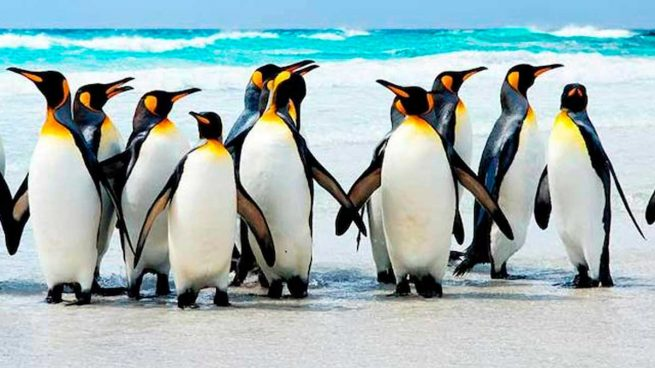

PINGUINOS
Vida en la tierra
 En tierra, los pingüinos tienen una postura erguida y tienden a caminar, brincar o correr con el cuerpo inclinado hacia adelante. Los pingüinos polares pueden viajar largas distancias rápidamente "deslizándose en trineo" o deslizándose sobre el hielo boca abajo y empujando hacia adelante con los pies. Si hace mucho frío, se apiñan en grandes colonias que los protegen de los depredadores y les proporcionan calor. Estas colonias consisten en miles, e incluso millones, de pingüinos.
Copyright 2020. Todos los derechos reservados.
Maracaibo Venezuela
Carlos Eduardo Montiel
Maracaibo Venezuela
Carlos Eduardo Montiel